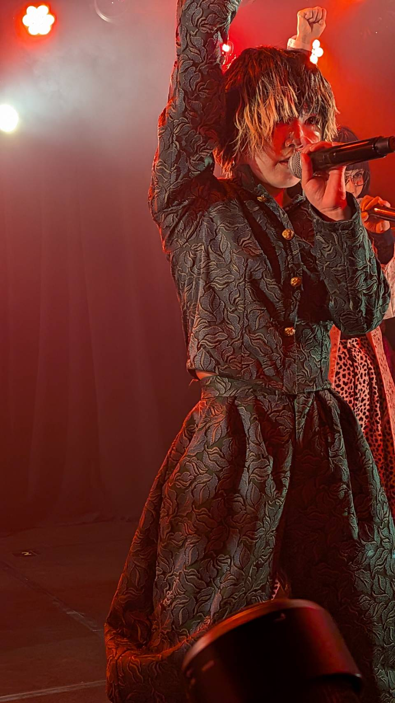
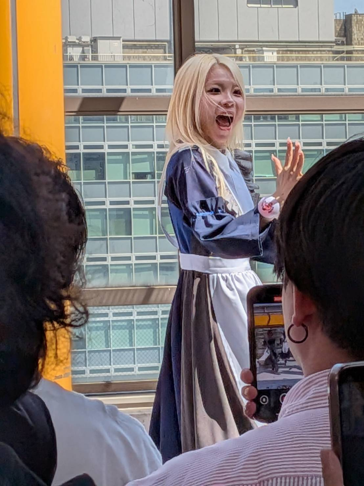
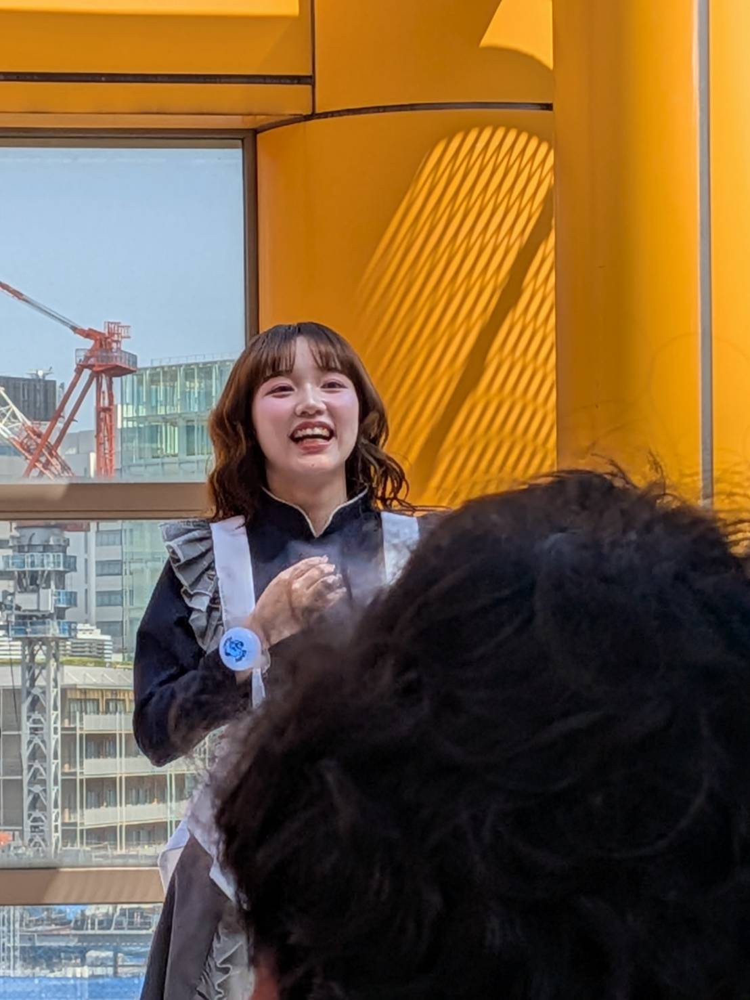
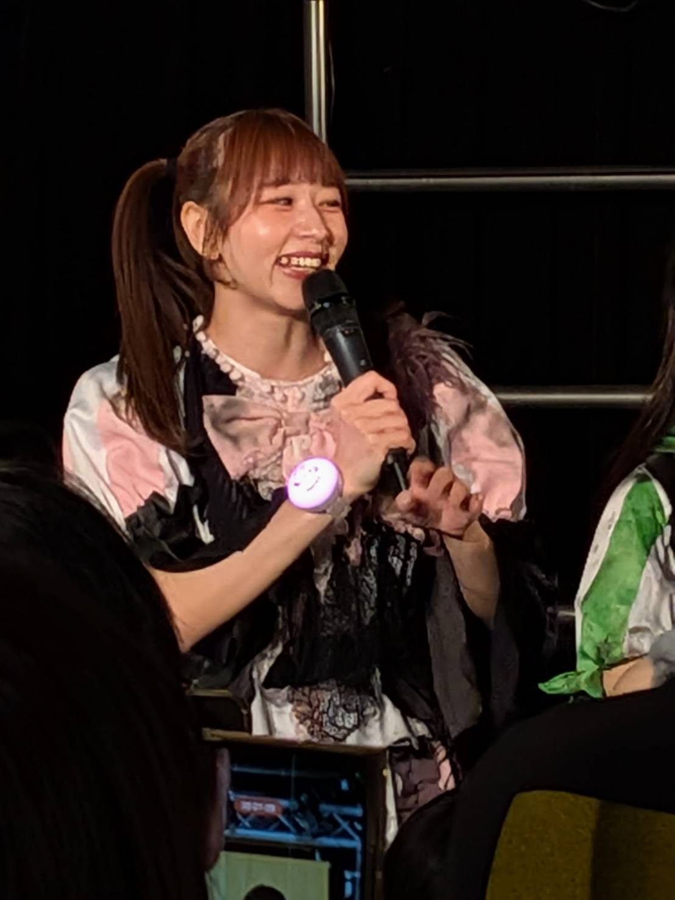
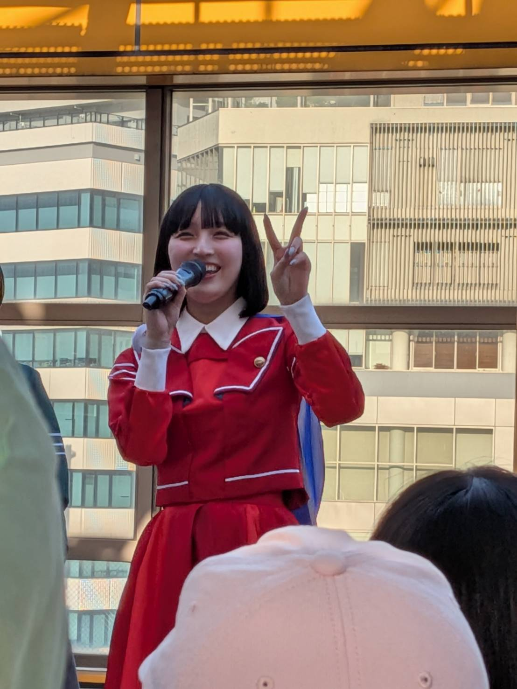
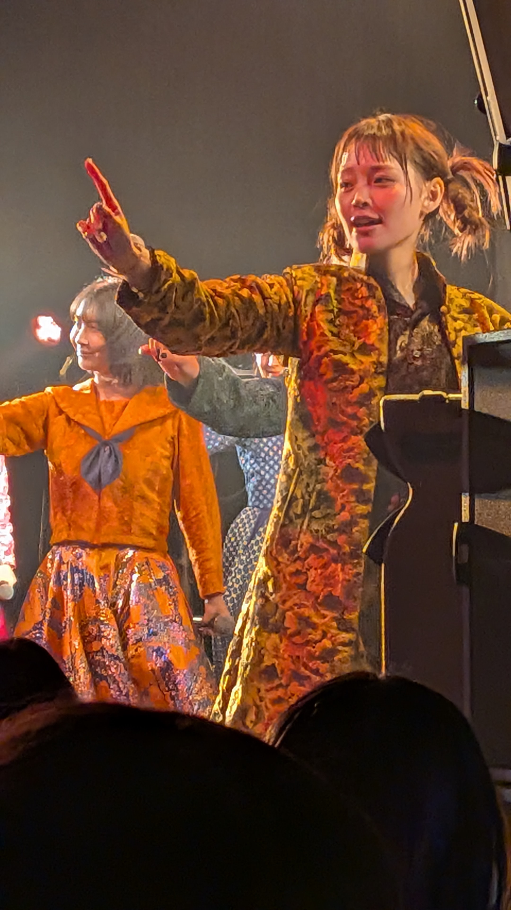
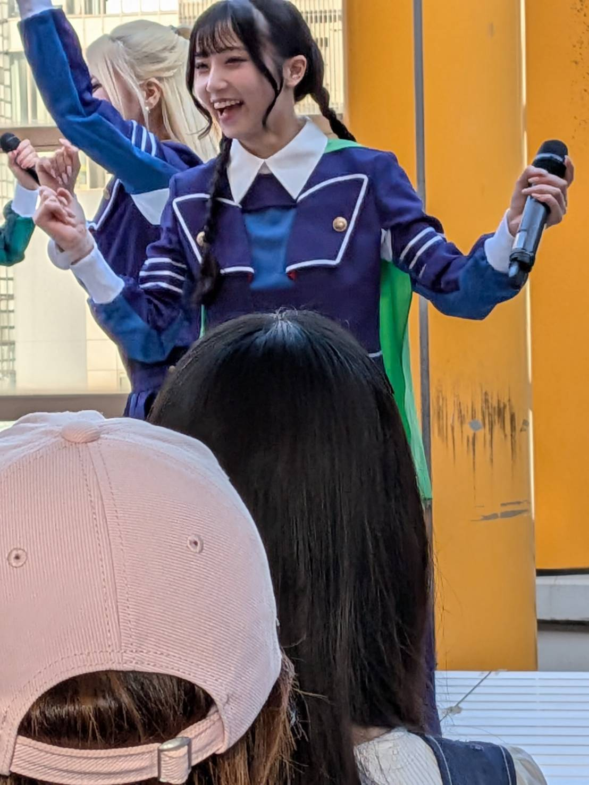
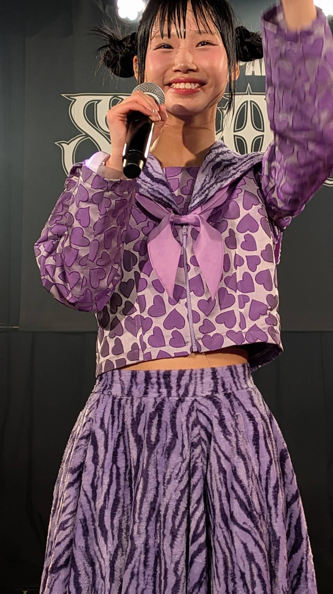

私の大好きで愛してやまない11人組アイドルグループです。
それぞれの個性が強く、ライブの熱量と楽曲の力強さが魅力です。
最高に歌って踊って笑って泣けるライブです‼
グループを引っ張る存在で、安定感と存在感が魅力です。
優しさと芯の強さを感じるメンバーで、表現力がとても印象的です。
パワフルなパフォーマンスと明るい雰囲気が魅力です。
独特の存在感があり、ライブで目を引くメンバーです。
個性的で印象に残るパフォーマンスが魅力です。
柔らかい雰囲気の中にしっかりした強さを感じます。
可愛さと表現力のバランスが魅力で、存在感があります。
特に好きなメンバーです。
可愛さだけでなく、ライブでの表現力と芯の強さに惹かれました。
ステージに立った時の存在感がとても印象的で、見るたびに好きになります。
特典会ではすごく優しく自分の話を聞いてくれたり、
時にはいじってくれたりもしてくれます。
些細なことにもすぐ気づける、まるで女神様のような存在です。
キャ・ノンは「ESCAPE」というソロラジオ番組にも出演していて、 ライブとはまた違った魅力を感じることができます。
特におすすめの楽曲は、GANG PARADEでは
「ラビバアソビバ」でメガホンを持って歌うシーンです。
会場全体が一体になるあの瞬間がとても好きです。
KiSS KiSSでは「キスフロート」の落ちサビが特におすすめです。
ここで毎回メロメロになっています。
特に好きなメンバーです。
ライブ中に見せる満面の笑みに、いつも癒されています。
名前のごとく、みんなからよくお世話されている姿もとても可愛らしいです。
特典会ではたくさん励ましてもらえたり、 すっごくにこにこでお話してくれたりと、 表情がとても豊かで、一緒にいるだけで元気をもらえます。
彼女は「HAPPY BABY CLUB」というブランドを立ち上げ、
そのプロデュースもしています。
さらに、1st写真集「べびずむ」では
かわいらしい彼女の姿をたくさん見ることができます‼
明るく元気な雰囲気が魅力で、ライブでも印象に残ります。
表現力が高く、ライブでの存在感がとても強いメンバーです。
しかし、GANGPARADEとKiSSKiSSは
2026年をもって解散することが発表されていて、
最後までしっかり応援したいと思っています。
ギャンパレのお父さん的存在 ギャンパレを黎明期からユメノユアとともに活動 彼女がオーディションに応募した動機が、「カミヤサキに会えるから」 という理由だったそうだ.... カミヤサキとはギャンパレの改名前グループ（POP）を作った。 彼女はソロイベントも行ったことがあります。 そして彼女はディズニーのグーフィーを推しています 彼女は遊び人のポストに高頻度でいいねをくれたり 彼女推し、さらには彼女以外のファンの方のことも覚えているため すごい記憶力だと毎度関心しております。

ギャンパレのお母さん的存在 彼女はギャンパレのことを常に考得ています。 彼女の歌声とパフォーマンスに魅了されない遊び人は一人もいません ジョー横溝さんという方と一緒にラジオも行っています。 趣味は編み物、ゲーム、パン作りなど、超インドア派の彼女 配信などでは、作った（もしくは作っている）編み物やパンなどを よく紹介してくれています 彼女のエピソードの一つとして高速道路のSAに置いて行かれた事件もありました そしてサンリオのクロミちゃんが好きであり2年ほど前に行われていた サンリオピューロランドでのギャンパレコラボでは彼女は相当喜んでいたそうです！ 優しさと芯の強さを感じるメンバーで、表現力がとても印象的です。

ギャンパレの歌姫 名古屋出身の超絶、魂のこもった歌い方で 遊び人の心を震わせるお方です。 彼女の声を聴くと自然と元気になれます。 彼女はソロイベントも行ったことがあります。 彼女は遊び人のポストに高頻度でいいねをくれたり 彼女推し、さらには彼女以外のファンの方のことも覚えているため すごい記憶力だと毎度関心しております。 そして、柔らかい雰囲気の中にしっかりした強さを感じることができます。

彼女はギャンパレの中でも鬼才なメンバーです 滋賀出身の彼女は特典会で驚くほどのマシンガントークで遊び人と交流してます。 彼女は4コマ漫画の連載もしており、イラストも特徴的です 最近はTHEイナズマ戦隊さんの似顔絵シールのイラストを描くなどその才能を 遺憾なく発揮してます 独特の存在感があり、ライブで目を引くメンバーです。

ギャンパレの中でビジュがつよつよのお方です お声も大きく、笑顔も素敵な方です‼ 柔らかい雰囲気の中にしっかりした強さを感じます。

彼女の歌声、話し方がとても魅力的です。 手足が長くパフォーマンスでも目を引くのが印象的です！ モデルさんのような美しさも兼ね備えています！ 彼女の笑顔はめちゃくちゃ可愛いですよ。 お手紙を出したことなどを覚えてくれており、 些細なことでもすぐ気づく素敵なメンバーです‼

特に好きなメンバーです。
可愛さだけでなく、ライブでの表現力と芯の強さに惹かれました。
ステージに立った時の存在感がとても印象的で、見るたびに好きになります。
特典会ではすごく優しく自分の話を聞いてくれたり、
時にはいじってくれたりもしてくれます。
些細なことにもすぐ気づける、まるで女神様のような存在です。
キャ・ノンは「ESCAPE」というソロラジオ番組にも出演していて、
ライブとはまた違った魅力を感じることができます。
特におすすめの楽曲は、GANG PARADEでは
「ラビバアソビバ」でメガホンを持って歌うシーンです。
会場全体が一体になるあの瞬間がとても好きです。
KiSS KiSSでは「キスフロート」の落ちサビが特におすすめです。
ここで毎回メロメロになっています。

特に好きなメンバーです。
ライブ中に見せる満面の笑みに、いつも癒されています。
名前のごとく、みんなからよくお世話されている姿もとても可愛らしいです。
特典会ではたくさん励ましてもらえたり、
すっごくにこにこでお話してくれたりと、
表情がとても豊かで、一緒にいるだけで元気をもらえます。
彼女は「HAPPY BABY CLUB」というブランドを立ち上げ、
そのプロデュースもしています。
さらに、1st写真集「べびずむ」では
かわいらしい彼女の姿をたくさん見ることができます‼

ギャンパレの大天使です。彼女の天使のような可愛さにメロメロにならない遊び人はいないです。 パフォーマンスではめちゃくちゃかっこいいナルちゃんを見れるので、ギャップがたまんないですよ‼ 特典会では多くの遊び人がメロメロになってます。 可愛いって言葉を具現化するとしたらナルちゃんしかいないんじゃないかってレベルで めっちゃ癒されますよ～‼

ギャンパレ加入が一番最後のメンバーです。 彼女はとにかく真面目で、 遊び人にどうしたら楽しんでくれるか、 そのためにはどのように自分がギャンパレで立ち回るべきかを 加入当初はすごく考えていたらしく なかなか思う様にいかないこともあったようだ。 しかし、彼女なりの殻の破り方でたくさんの遊び人を魅了しているのである。

← 遊び場TOP